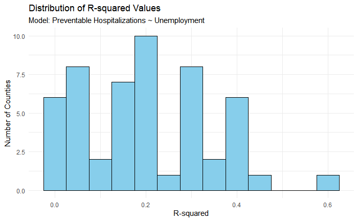
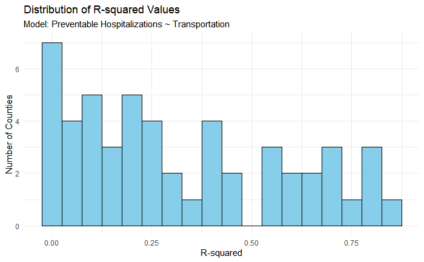
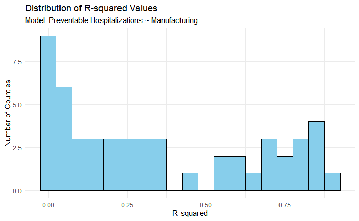
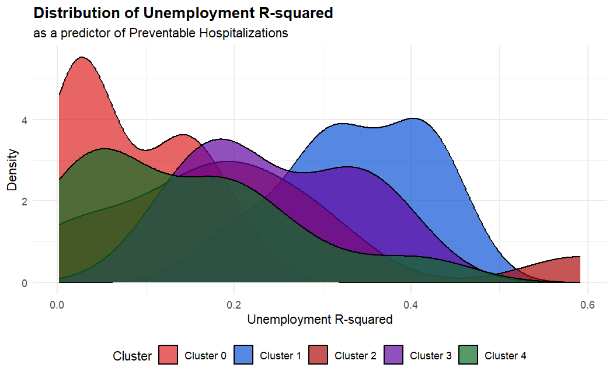
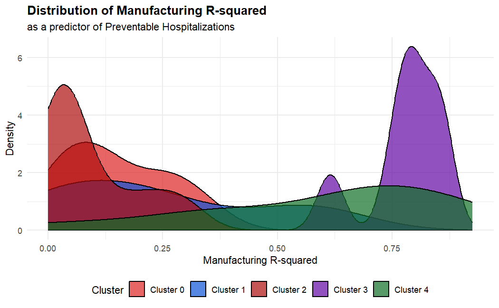
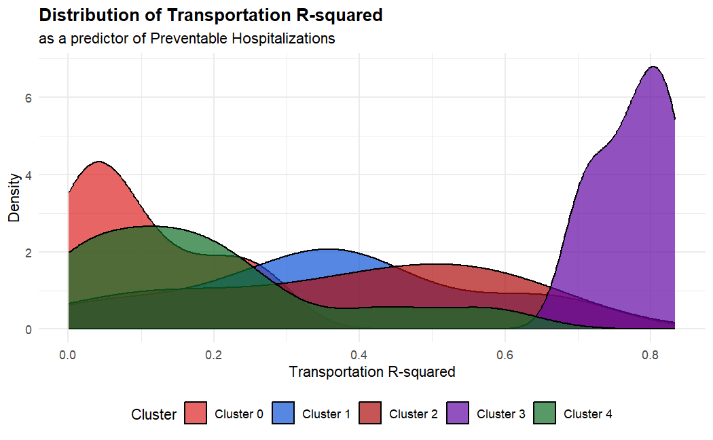
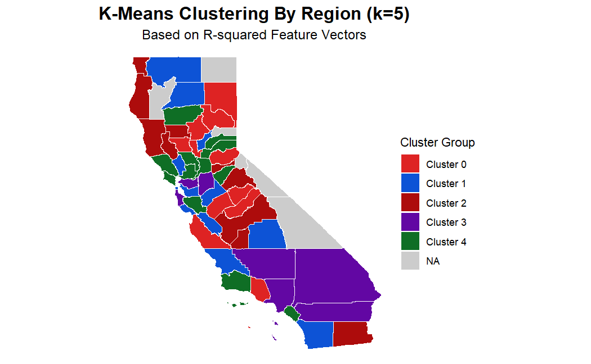
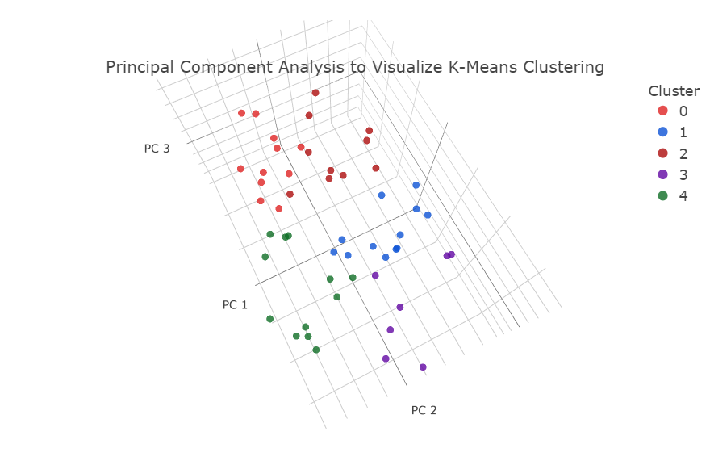
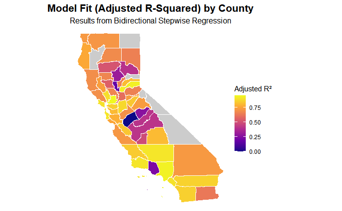
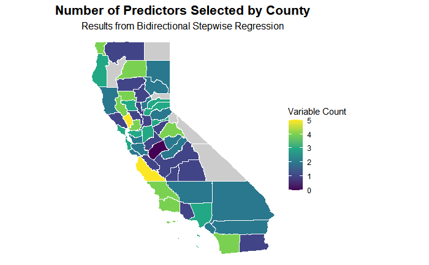

Introduction
The field of public health and statistics are fundamentally intertwined. This is especially so when looking at Social Determinants of Health (SDOH) which have problems that require more complex analytical models to analyze and inform. Data science being a cross disciplinary skill of statistics and computer science is perfect for addressing these issues.[] This project intends to leverage advanced machine learning models within the discipline of data science as well as the traditional data gathered for SDOH to gain insight into the potential causes of preventable hospitalizations within the counties of California.
The key steps involved were: Data Collection: Gathering accurate and real SDOH data provided by government agencies such as calHHS, California Open Data Portal, and the US census. Data were then joined into one large use-able dataframe.
Multiple Linear Regression: A unique model was created for every county using all available predictors.
K-means Clustering: R-squared values obtained for each county from the multiple linear regression models were then used as feature vectors in K-means clustering.
Principal Component Analysis: PCA was used to reduce dimensionality of the data into something that was able to be visualized.
Stepwise Regression: Bidirectional stepwise selection used to select the final linear regression models, which automatically identified and included only the statistically significant predictors relevant to that county’s data.
Background
Social determinants of health encompass a wide range of social, economic, and environmental factors that influence health outcomes across an individual’s lifespan. These include conditions related to birth, early development, living environment, education, employment, and aging, along with access to financial resources, political power, and social support systems. SDOH studies are very common in the field of public health. Often these studies are performed by leveraging publicly available data or by survey sampling. Most studies look at particular social determinants and utilize descriptive statistics and basic modeling for analysis.
California healthcare spending is estimated at around $400 billion annually, with Medi-Cal being an estimated $160 billion of it. [] With the cost of healthcare rising every year, many California residents are unable to keep up. Hospitalizations in particular constitute a substantial portion of healthcare spending, with many being preventable. This project builds on to the traditional SDOH study by employing advanced machine learning techniques to investigate the associations between social determinants of health and preventable hospitalization rates at the county level within California. The analysis identifies underlying patterns both within individual counties and between different counties, offering insights into the broader structural and regional dynamics that contribute to disparities in preventable hospitalizations.
Four social determinants of health were chosen for analysis across 58 counties in California: Education, Unemployment, Type of Employment, and Racial demographics. Education, Race, and Unemployment were chosen due to the extensive studies done that show that they have direct impacts on health. [] Three types of Employment were included: Manufacturing, Transportation, and Agriculture. These three types of employment had the most usable data across all counties and we deemed that they were diverse enough to have interesting results.
Methods
Data Collection
Data for this study were sourced from publicly available government repositories, including the California Health and Human Services Agency (CalHHS)[], the California Open Data Portal (CODP)[], and the United States Census Bureau. County-level public health metrics, such as rates of preventable hospitalizations and population estimates, were obtained from CalHHS. Employment-related indicators, including overall employment rates and the distribution of employment types across counties, were retrieved from the CODP. Education levels and racial and ethnic demographics were obtained from US Census data. Data from all sources were obtained for the years of 2005 to 2023, allowing for a multi-year analysis of county-level trends.
Data Ingestion
Data from CalHHS and CODP were obtained in csv format then cleaned using R. Unnecessary variables were removed and the data frames were joined together. The tidyverse package in R allowed direct inclusion of US Census data[]. The census data were loaded in and merged to create the final dataframe for analysis. It is worth mentioning that the census data has repeating values as they are aggregated every 5 years. Six California counties were dropped due to lack of data; Mono, Sierra, Modoc, Trinity, Alpine, Inyo. These counties have small populations which may have contributed to the lack of collected data for them. Values were then calculated as percentages of the population per county, per year. Preventable Hospitalizations were calculated at a rate per capita per 100,000 population as composite-specific types of hospital visits that have been predetermined to be preventable. This includes; COPD, Asthma, Diabetes, Pneumonia, and UTI’s. A diversity index for races was created using the Gini-Simpson Index Formula []. \[ \text{Gini-Simpson Index} = 1 - \sum_{i=1}^{S} p_i^2 \]
Preliminary exploratory data analysis revealed a downward trend in preventable hospitalizations in every County and Region of California since 2005 (see Figure 1 and Figure 2). There was a sharp decline in 2020, however this could be due to the Covid-19 epidemic that year which caused hospitals to allocate less resources and admit less individuals for hospitalizations outside of SARS-Cov-2.[]
 |
 |
|---|---|
| Figure 1. Downward trend in Preventable Hospitalizations Across All Counties | Figure 2. Downward Trend in Preventable Hospitalizations Across All Regions |
Ethical Considerations
Public health and census data often encapsulate long-standing structural inequalities, including those stemming from historical patterns of segregation, disparities in educational and occupational opportunities, and inequitable access to healthcare services across racial and socioeconomic strata. There have also been ethical concerns about the use of census data for healthcare research. While census data may be anonymized, the nature of the data involves categorizing individuals into blanket categories such as lumping all Asian ethnicities together or the “some other race” option. There is also inherent bias within the census process such as non-respondent bias.[] These inherent-bias were acknowledged and taken into consideration when performing analysis. Due to the nature of these data, all data are treated as representation of people rather than just numbers and appropriate language was used. To mitigate bias for race and ethnicity, data was used to create a diversity index per county rather than looking at the spread of individual ethnicities.
Modeling
The goal of this project was to build a model that gave inference on what primary predictors are best used for modeling preventable hospitalization rates in each county. Primary modeling was conducted using multiple linear regression to create a unique model for every county. The first set of models used all of the predictive variables, individually modeled to predict preventable hospitalizations providing an R-squared value for each predictor in each county. Regression assumptions were tested for each county model using Shapiro-Wilks Tests, VIF, \(R^2\) values, and Breusch-Pagan Tests.
The set of R-squared values were then used as a feature vector for K-means clustering. Clustering at different values of k was evaluated using Within Cluster Sum of Squares (WCSS). For the purposes of inference k=5 was selected and used in further analysis as it was a good fit for interpretation. Principle Component Analysis (PCA) was implemented to reduce the dimensionality into something that could be visualized. Visualizing the results of the k-means clustering using principal components provided evidence that the clusters were accurately delineated into meaningful regions. The clusters were then visualized spatially on a county map to determine patterns.
The final linear regression models were established using bidirectional stepwise regression that selected the significant predictors and only incorporated them into the final model for each county. VIF scores were then used in each county model to remove collinear predictors depending on the individual models. The results of the final models were visualized on the map to determine patterns.
Results
Linear Regression Analysis
Different SDOH factors and their relationship with Preventable Hospitalizations across the different California Counties. California Countries are extremely diverse so individual linear models were ran for each county. The \(R^2\) values revealed that as sole predictors Education Level had high correlation for most counties. The type of employment had lower \(R^2\) values across the board with some counties having more correlation with Transportation and Manufacturing. Unemployment had low \(R^2\) values for most counties suggesting there is little relationship. Diversity had higher \(R^2\) values across the board, suggesting that as a single predictor it had broader relevance.
The following figures show the distribution of \(R^2\) values across counties for univariate models.

Figure 3. \(R^2\) – High School Graduation

Figure 4. \(R^2\) – Unemployment

Figure 5. \(R^2\) – Diversity Index

Figure 6. \(R^2\) – Agriculture Employment

Figure 7. \(R^2\) – Transportation

Figure 8. \(R^2\) – Manufacturing Employment
K-Means Clustering & PCA
K-means clustering with k=5 revealed distinct patterns in model performance across county groupings. Clusters 0 and 2 were characterized by generally poor model fit, as shown by low adjusted \(R^2\) values across most counties. Clusters 1, 3, and 4 however, showed stronger model performance, with a greater proportion of counties having higher \(R^2\) values. Cluster 1 was primarily driven by Unemployment, High School Graduation, and the Diversity Index as key predictive variables. Cluster 3 produced moderately strong models, with Transportation, High School Graduation, and the Diversity Index emerging as the most influential predictors. Cluster 4 achieved the best model performance, with the Diversity Index, Agricultural employment, and Manufacturing employment contributing the most towards the predictive strength of the models.

Figure 9. \(R^2\) – Unemployment by Cluster

Figure 10. \(R^2\) – Diversity Index by Cluster

Figure 11. \(R^2\) – Agriculture by Cluster

Figure 12. \(R^2\) – Manufacturing by Cluster

Figure 13. \(R^2\) – Transportation by Cluster

Figure 14. \(R^2\) – High School Graduation by Cluster
Each county was assigned one of five clusters based on the predictive strength of individual variables. The resulting map highlights regional similarities in the underlying social determinants of preventable hospitalizations.

PCA shows that there is reasonably distinct separation between clusters which supports the validity of our K-Means model. \(R^2\) vectors carry enough structure to form meaningful clusters.

Figure 16. PCA Visualization of K-means Clusters Based on R-squared Feature Vectors.
Stepwise Regression
Results from bilateral stepwise regression supports the results from our K-Means clustering.
 Figure 17. Adjusted \(R^2\) Value By County
 Figure 18. Number of Predictors Selected by County
Conclusions
The clustering analysis reveals a clear separation between poorly and strongly performing regression models based on their adjusted R-squared values. Models in clusters 0 and 2 generally exhibit low predictive performance, while those in clusters 1 and 4 demonstrate higher accuracy. Cluster 1 models consistently rely on Unemployment rates and High School Graduation rates as primary predictors, suggesting that these variables play a central role in explaining variation in preventable hospitalization rates. Cluster 4 models also perform well but rely more heavily on predictors such as the Diversity Index, employment in Agriculture, and employment in Manufacturing. Cluster 3 includes models with moderate predictive power, most often associated with Transportation-related employment.
Analysis of the clustering results highlights the importance of population density on model viability. Counties with larger populations, particularly those located along the California coastline, are more frequently found in Cluster 1 and tend to benefit from models that rely on educational level and employment indicators. On the other hand, counties in the Central Valley and Northern California, which are more rural and agriculturally oriented, tend to have lower population densities and are more often associated with weaker models. These findings suggest that while several social determinants influence preventable hospitalizations, High School Graduation and Unemployment are the most consistent and powerful predictors across the state. Employment in the agricultural sector also appears to be a significant factor, particularly in less densely populated regions.